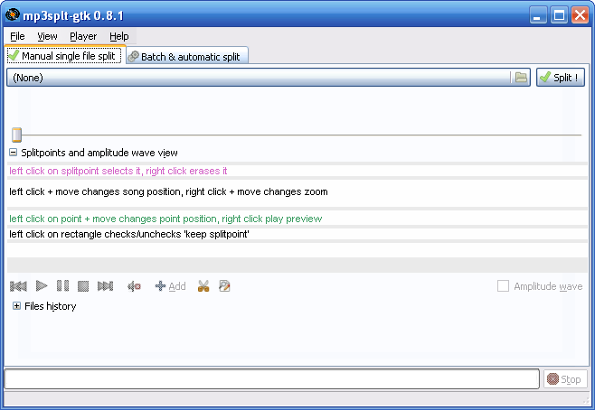

Простой аудиоредактор, который может подрезать mp3-файлы в Linux, без переконвертации аудио-потока (т.е. без потери качества):
gtk-mp3split
Работает также и с OGG форматом.
Краткое описание:
mp3splt-gtk — бесплатная программа для разделения аудиофайлов MP3 и OGG без их перекодирования. Это очень полезно для разбиения целых альбомов на одиночные треки. При этом можно указывать имена конечных файлов вручную или брать их из локальной или сетевой базы данных. Для автоматизации процесса разделения файла на треки поддерживается поиск пауз.
Интерфейс программы очень странный. Чтобы увидеть временную шкалу, на которой можно ставить метки разделения, надо нажать кнопку Play. Иногда кнопка не нажимается, тогда надо выбрать Play из меню. В момент вопроизведения появится временная шкала. Чтобы остановить поигрывание и начать работать со шкалой, надо нажать Pause. Нельзя нажимать Stop, иначе временная шкала пропадет!
На временной шкале надо поставить две метки разделения (splitpoint), и если нажать "Split It!" или в русскоязычном интерфейсе "Разделение", то кусок файла между метками молча сохранится. Вопрос: куда? В директорию пользователя. Но можно сохранить в директорию, где лежит исходный mp3 файл. Это настраивается в Preferences. Имя сохраняемого файла будет очень странное:
здесь могло быть описание_part1.mp3
Но хотя бы программа свои функции выполняет.
Скриншоты разных версий:

Сайты:
http://wikiprograms.org/mp3splt-gtk/
http://mp3splt.sourceforge.net/mp3splt_page/home.php